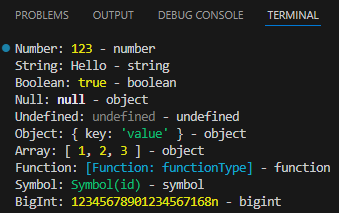
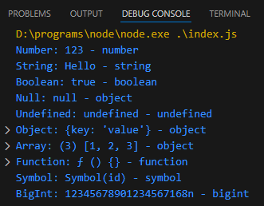

Числа та рядки
- Отримати від користувача 3 рядки та вивести їх у довільному порядку однією командою (шаблонні рядки);
Скрипт:
Результат виконання у Terminal:
Результат виконання у Debug Console:
Посилання на репозиторій github.com Посилання на гілку на github.com